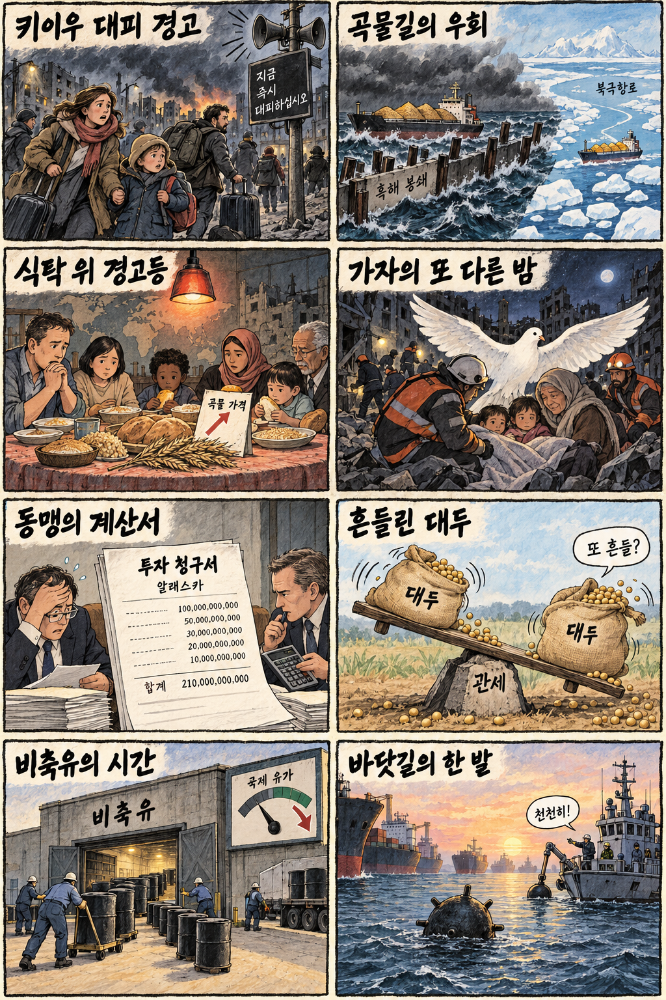
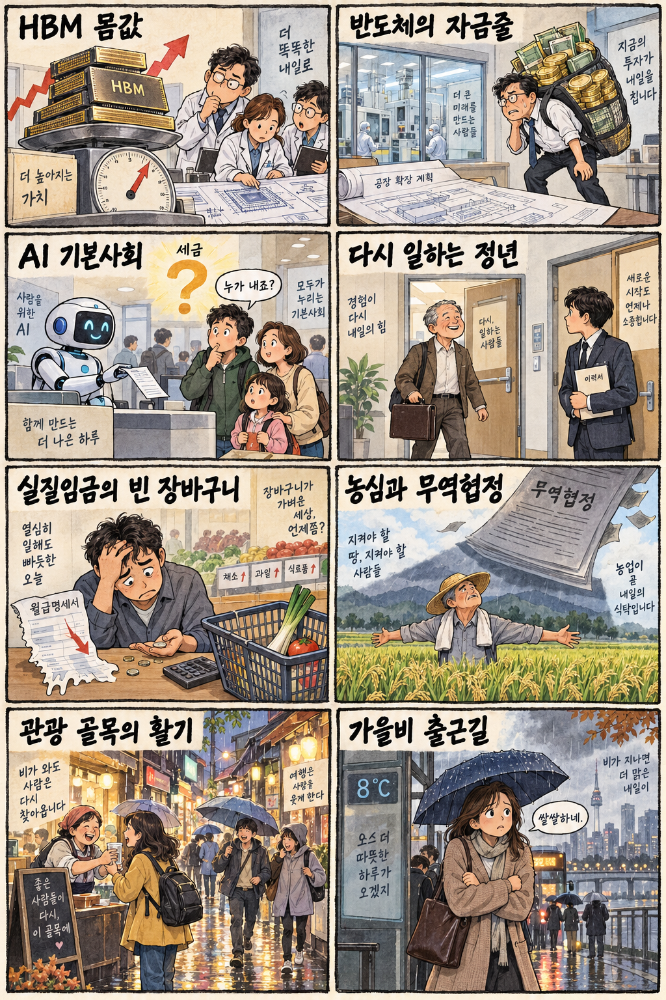

01
프리포트맥모란 · 69.56→72.04달러 · +3.57%
내용요약 시가 대비 +3.57%로 조사 종목 중 상승폭이 컸습니다.
예상여파 원자재 관련 투자심리에 우호적이지만 국내 소재주와의 실적 연결은 기업별로 확인해야 합니다.
MORNING_BRIEFING_20261004
작성 시각: 2026-10-04 06:40 KST · 직전 미국 정규장과 2026-10-04 KST 당일 공개 기사 기준
직전 미국 정규장인 10월 2일 뉴욕증시는 다우 +0.49%, S&P 500 +0.73%, 나스닥 +1.19%로 상승했습니다. 미국 9월 고용 둔화 보도로 금리 인상 기대가 후퇴한 가운데 기술주 위험선호가 회복됐습니다. 한국 증시는 전날 KOSPI가 7,000선을 넘었지만 KOSDAQ은 약보합이어서 지수보다 업종별 차별화에 유의해야 합니다.
| 지수 | 종가 | 등락률 | 한국 증시 시사점 |
|---|---|---|---|
| 다우존스 | 51,176.96 | +0.49% | 고용 둔화와 금리 기대 변화 점검 |
| S&P 500 | 7,722.72 | +0.73% | 고용 둔화와 금리 기대 변화 점검 |
| 나스닥 종합 | 27,190.86 | +1.19% | 기술주 위험선호 회복이 반도체 심리에 우호적 |
직전 미국 정규장은 고용 둔화와 금리 기대 변화로 기술주 위험선호가 회복됐습니다.
10월 2일 +0.46%, 시가 대비 +0.94%로 7,000선 위에서 마감했습니다.
키이우 긴장과 흑해 곡물 운송 차질이 지정학·식품물가 부담을 키우고 있습니다.
일요일 휴장과 검증 표본 부족으로 공식 추천 없이 현금 관망을 유지합니다.
10월 3일 보고서는 공식 추천을 내지 않았습니다. 게시 당시 판단을 유지하며 사후 종목을 추가하지 않습니다.
| 시장 | 종가 | 등락률 | 기준 |
|---|---|---|---|
| KOSPI | 7,003.74 | +0.46% | 10월 2일 정규장 · 시가 대비 +0.94% |
| KOSDAQ | 893.29 | -0.11% | 10월 2일 정규장 · 시가 대비 +0.01% |
| 다우존스 | 51,176.96 | +0.49% | 미국 10월 2일 정규장 |
| S&P 500 | 7,722.72 | +0.73% | 미국 10월 2일 정규장 |
| 나스닥 종합 | 27,190.86 | +1.19% | 미국 10월 2일 정규장 |
나스닥 +1.19%로 3대 지수 중 가장 강했습니다.
프리포트맥모란 +3.57%, 옥시덴털 +2.06%로 원자재 관련주가 강했습니다.
코인베이스 -5.87%, 스트래티지 -3.52%로 변동성이 확대됐습니다.
인텔 -3.90%, 마이크론 -2.94%로 업종 내부 차별화가 나타났습니다.
내용요약 시가 대비 +3.57%로 조사 종목 중 상승폭이 컸습니다.
예상여파 원자재 관련 투자심리에 우호적이지만 국내 소재주와의 실적 연결은 기업별로 확인해야 합니다.
내용요약 시가 대비 +2.92%로 대형 성장주 중 강세를 보였습니다.
예상여파 성장주 위험선호에는 긍정적이나 국내 이차전지 전반의 매수 근거로 단순 확대하면 안 됩니다.
내용요약 시가 대비 +2.47%로 우주산업 종목의 변동성이 두드러졌습니다.
예상여파 국내 우주 관련주는 계약과 실적을 확인해야 하며 테마성 추격은 피해야 합니다.
내용요약 시가 대비 -5.87%로 조사 종목 중 낙폭이 가장 컸습니다.
예상여파 국내 가상자산 연계주의 단기 심리에 부담이며 높은 변동성을 전제로 대응해야 합니다.
내용요약 시가 대비 -5.74%로 정보기술 서비스 종목이 약했습니다.
예상여파 기업 IT 지출과 컨설팅 수요의 둔화 우려가 관련 서비스 기업 가치평가에 영향을 줄 수 있습니다.
최근 거래일 KOSPI는 7,003.74로 전일 종가 대비 +0.46%, 시가 대비 +0.94%였고 KOSDAQ은 전일 종가 대비 -0.11%, 시가 대비 +0.01%였습니다. 직전 미국 정규장의 나스닥 상승은 반도체·성장주 심리에 우호적이지만 마이크론과 인텔은 약세였습니다. 오늘은 일요일로 국내 증시가 휴장하므로 월요일 개장 전 지정학 뉴스, 곡물·유가, 환율과 반도체 개별 흐름을 다시 확인해야 합니다.
오늘은 추천 없음 — 현금 관망
오늘은 일요일로 한국 증시가 휴장합니다. 당일 시가 진입과 호가 유동성을 확인할 수 없고, 전일까지 수급·컨센서스·공식 촉매·30건 이상의 확률 보정 표본을 모두 갖춰 종합점수 75점·상승확률 60%·예상 손익비 1.5를 검증한 후보도 없습니다.
관심 연결종목 HBM, 전력인프라, 정보보안 관련주는 월요일 개장 뒤 상대강도 관찰 대상일 뿐 매수 추천이 아닙니다. 갭 상승 시 추격매수하지 않습니다.
대규모 타격 경고가 실제 군사행동과 유럽 위험자산에 미칠 영향을 봅니다.
흑해 운송 차질과 세계 식량가격 상승의 국내 원가 전이를 점검합니다.
전력인프라 병목과 순환 금융 우려를 실제 수주·현금흐름과 구분합니다.
아침 최저 8도, 수도권 밤비와 큰 일교차에 대비합니다.
핵심 요약: AI 경쟁의 중심이 칩 확보에서 전력망·자금조달·데이터 보호로 넓어지고 있습니다. HBM 가격 상승은 메모리 기업에 기회지만 설계 최적화와 순환 금융, 금융권 해킹은 동시에 점검할 위험입니다.
내용요약 실리콘밸리 인공지능 경쟁의 병목이 연산칩에서 전력망과 데이터센터 기반시설로 이동하며 한국 기업의 기회가 커진다는 당일 보도입니다.
예상여파 전력기기·냉각·케이블 수요에는 우호적이지만 실제 수주와 설비 증설 속도를 확인해 기대와 실적을 구분해야 합니다.
내용요약 AI 기업 사이의 투자와 구매 약정이 서로 맞물리는 순환 금융 구조가 닷컴버블 당시 공급자 금융과 닮았다는 당일 분석입니다.
예상여파 설비투자 확대를 지지하는 자금 구조가 수요 둔화 때 역으로 부담이 될 수 있어 매출의 독립성과 현금흐름 점검이 중요합니다.
내용요약 HBM 가격 상승으로 AI칩 설계사가 메모리 탑재량과 구조를 다시 최적화하고 있다는 당일 보도입니다.
예상여파 메모리 가격과 수요에는 긍정적이지만 비용 절감형 설계가 확산되면 공급사의 제품 조합과 협상력이 달라질 수 있습니다.
내용요약 인공지능을 이용한 해킹 시도가 상호금융권까지 광범위하게 확산했을 수 있다는 당일 보도입니다.
예상여파 제2금융권의 인증·탐지 투자가 빨라질 수 있으며 개인정보 유출과 운영 중단에 대비한 공동 대응체계가 요구됩니다.
내용요약 챗봇 기반 건강 서비스에 의료기록을 올릴 때 병원과 같은 의료정보 보호 규정이 적용되지 않을 수 있다는 당일 보도입니다.
예상여파 개인 건강데이터의 저장·재사용 범위와 동의 절차가 서비스 신뢰도와 규제 방향을 가를 핵심 변수가 됩니다.
핵심 요약: 키이우 대피 경고와 흑해 곡물길 차질이 안보·식량가격 위험을 함께 키우고 있습니다. 가자 공습과 알래스카 투자 압박까지 겹쳐 외교·통상 불확실성도 이어집니다.
내용요약 러시아가 키이우에 대규모 군사 타격을 예고하며 외국인에게 도시를 떠나라고 경고했다는 당일 보도입니다.
예상여파 민간인 안전 우려와 전쟁 확전 위험이 커지며 유럽의 방위·에너지·난민 대응 부담이 다시 높아질 수 있습니다.
내용요약 흑해 곡물 운송 차질로 북극권까지 우회하는 방안이 거론되며 곡물 공급 충격 우려가 커졌다는 당일 보도입니다.
예상여파 운송거리와 보험료 상승은 식품 물가를 밀어 올릴 수 있어 수입 의존 국가의 재고와 대체 조달이 중요해집니다.
내용요약 이스라엘이 가자지구를 다시 공습해 민간인 사망자가 발생했다는 당일 보도입니다.
예상여파 휴전·구호 협상의 불확실성이 커지고 중동의 인도주의 위기와 주변국 긴장이 장기화할 수 있습니다.
내용요약 미국이 알래스카 투자 협상과 관세를 연계하는 압박성 메시지를 냈다는 당일 보도입니다.
예상여파 동맹 현안과 상업 투자의 경제성을 분리해 검토해야 하며 한국 수출기업의 정책 불확실성이 커질 수 있습니다.
내용요약 세계 식량가격이 4년 만의 최고 수준을 기록했다는 당일 해외 보도입니다.
예상여파 곡물 운송 차질과 에너지 비용이 겹치면 가공식품·외식 물가로 파급될 수 있어 취약국의 식량안보 부담이 커집니다.

핵심 요약: AI 확산에 따른 고용·소득 충격과 정년 재고용, 청년 일자리의 균형이 정책 의제로 떠올랐습니다. 실질임금·소비 둔화와 무역협정의 농어업 영향, 가을비까지 생활경제 변수를 함께 살펴야 합니다.
내용요약 정부가 인공지능 확산에 따른 고용·소득 충격에 대비해 이른바 AI 기본사회 정책 검토에 착수했다는 당일 보도입니다.
예상여파 복지와 재교육 재원을 둘러싼 논의가 커질 수 있으며 기업에는 자동화 이익과 사회적 비용의 분담 기준이 쟁점이 됩니다.
내용요약 대기업의 정년퇴직자 재고용은 늘지만 청년 일자리의 질과 진입 기회가 우려된다는 당일 보도입니다.
예상여파 숙련 유지와 세대별 채용을 함께 달성하려면 직무·임금체계 개편과 신규채용 목표를 연계할 필요가 있습니다.
내용요약 한국 경제의 외형 성장과 달리 실질임금과 소비가 함께 감소하고 있다는 당일 보도입니다.
예상여파 가계 체감경기 회복이 늦어질 수 있어 내수기업 매출과 고용, 물가를 함께 보는 정책 대응이 중요해집니다.
내용요약 정부가 아시아·태평양 자유무역협정 참여 가능성을 검토하면서 농어업 지원의 실효성이 쟁점이라는 당일 보도입니다.
예상여파 수출시장 확대 기대와 국내 취약품목 피해가 엇갈릴 수 있어 품목별 영향평가와 전환 지원이 필요합니다.
내용요약 아침 최저기온이 8도까지 내려가고 전국 곳곳에 가을비가 내리며 수도권은 밤부터 비가 예보됐습니다.
예상여파 큰 일교차에 대비해 겉옷을 챙기고 귀경·나들이 교통과 야외행사 일정은 시간대별 강수 정보를 확인해야 합니다.
